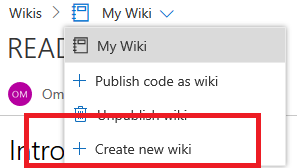

Deleting Project Wiki from VSTS
VSTS recently added the Wiki feature - an integrated wiki backed by Git that allows people to check in Markdown files view them in their VSTS instance. This works great for storing documentation for products or teams right into the repo so that it sits with the code.
Prior to them adding support for publishing from any arbitrary git repo, you had a single wiki created (named the same as your VSTS project with .wiki appended). Now that you can have multiple wikis in the same VSTS project, this presents a problem where you may not want a default Project wiki and instead rely only on files that are checked into your normal git repo.
Unfortunately, it is currently not possible to delete a project wiki using the VSTS UI. You can unpublish a wiki that you published via a git repo, but this is not possible with the Project wiki (here is a full list of all the differences between the project and published wikis)
Accidentally click on this link? There is no way to undo!
This tutorial guides you through deleting a Project wiki using the VSTS REST APIs so that when clicking on the Wiki link, you are directed to the first published wiki.
Getting Started
For this tutorial you will need the following things:
- Permissions to delete repositories on your VSTS instance
- Fiddler, Postman, cURL or similar tool to make HTTP calls
Get Personal Access Token
In order to utilize the VSTS REST APIs, you will first need to get a Personal Access Token that you will then use to generate an authorization header.
- Open a browser window to your VSTS project
- Hover over your profile image in the top right corner and select Security
- In the
Personal Access Tokenssection, click the Add button. Give it an appropriate description (like “VSTS Rest API token”) and give it permissions toCode (read, write, manage). - Save the access token that is generated in a safe place for future use
Generate Authorization Header
The authorization header is what we will use to authenticate in our REST calls. VSTS APIs use a Base64 encoded string as the authorization header, so we need to generate that. Fiddler actually has this built in, but there are also plenty of sites that will do the base64 encoding for you.
The format of the input for the encoding is: <username>:<personal access token>
In this case, <username> can be anything you want. For example, if your personal access token was xqdktnq3welqcverk65kd77oxcc33x5xjn2af2w56g4yllpynfgq, you would get the following:
1 | Input: omeed:xqdktnq3welqcverk65kd77oxcc33x5xjn2af2w56g4yllpynfgq |
Get Repo ID
To delete the wiki, we are actually going to delete the Git repo that is backing it. Unfortunately, we can not go through the normal git repo UI as the wiki repo is hidden, so we need to get some more information about it and then call the rest APIs to delete it.
For this, we just need to make a REST call to the Repositories List API
1 | GET https://{accountName}.visualstudio.com/{project}/_apis/git/repositories?api-version=4.1&includeHidden=true |
There are 2 important parts to this HTTP call:
- The
includeHiddenflag in the API call is required or the wiki will not be returned. - Make sure to include the Authorization header in the GET request. The format of that is:
Authorization: Basic <Base64 Encoded Authorization Header>
If you got a 200 OK HTTP response, then that means it worked! You can now look at the JSON response and one of the repos be the wiki repo (the Project wiki’s name property will be in the format <VSTS Project Name>.wiki>)
Make a note of the url property of the repository, which is made up of your VSTS url and the repository ID.
Delete Repo
Our final step is to use the url we retrieved from the repository list and to build our final REST call:
1 | DELETE https://{accountName}.visualstudio.com/{project}/_apis/git/repositories/{repositoryId}?api-version=4.1 |
You can write the Url above yourself, or just use the url we got from the previous step. Make sure to add the api-version to the end of the URL. Some things to note:
- Make sure you are making a DELETE call and not GET or POST
- Don’t forget to add the authorization header to the call just like the previous step
If you get a 204 No Content that means the resource has been successfully deleted.
Conclusion
And that’s it! If you go to the Wiki link in VSTS, you will be directed to the first published wiki, or if no other wikis were published, just the default page.